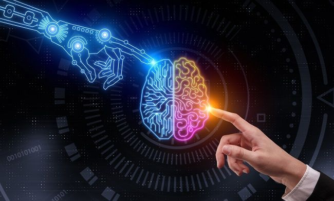

¿QUE ES LA INTELIGENCIA ARTIFICIAL?
La inteligencia artificial (IA) es, en informática, la inteligencia expresada por máquinas, sus procesadores
y sus softwares, que serían los análogos al cuerpo, el cerebro y la mente, respectivamente, a diferencia de
la inteligencia natural demostrada por humanos y ciertos animales con cerebros complejos. Se considera que
el origen de la IA se remonta a los intentos del hombre desde la antigüedad por incrementar sus
potencialidades físicas e intelectuales, creando artefactos con automatismos y simulando la forma y las
habilidades de los seres humanos. En ciencias de la computación, una máquina «inteligente» ideal es un
agente flexible que percibe su entorno y lleva a cabo acciones que maximicen sus posibilidades de éxito en
algún objetivo o tarea. Coloquialmente, el término inteligencia artificial se aplica cuando una máquina
imita las funciones «cognitivas» que los humanos asocian con otras mentes humanas, como por ejemplo:
«percibir», «razonar», «aprender» y «resolver problemas». Andreas Kaplan y Michael Haenlein definen la
inteligencia artificial como «la capacidad de un sistema para interpretar correctamente datos externos, para
aprender de dichos datos y emplear esos conocimientos para lograr tareas y metas concretas a través de la
adaptación flexible». A medida que las máquinas se vuelven cada vez más capaces, tecnología que alguna vez
se pensó que requería de inteligencia se elimina de la definición. Por ejemplo, el reconocimiento óptico de
caracteres ya no se percibe como un ejemplo de la «inteligencia artificial» habiéndose convertido en una
tecnología común.Avances tecnológicos todavía clasificados como inteligencia artificial son los sistemas
de conducción autónomos o los capaces de jugar ajedrez o Go.
La inteligencia artificial es una nueva forma de resolver problemas dentro de los cuales se incluyen los
sistemas expertos, el manejo y control de robots y los procesadores, que intenta integrar el conocimiento en
tales sistemas, en otras palabras, un sistema inteligente capaz de escribir su propio programa. Un sistema
experto definido como una estructura de programación capaz de almacenar y utilizar un conocimiento sobre un
área determinada que se traduce en su capacidad de aprendizaje. De igual manera se puede considerar a la
IA como la capacidad de las máquinas para usar algoritmos, aprender de los datos y utilizar lo aprendido en
la toma de decisiones tal y como lo haría un ser humano, además uno de los enfoques principales de la
inteligencia artificial es el Machine Learning, de tal forma que los ordenadores o las máquinas tienen la
capacidad de aprender sin estar programados para ello.

MENU